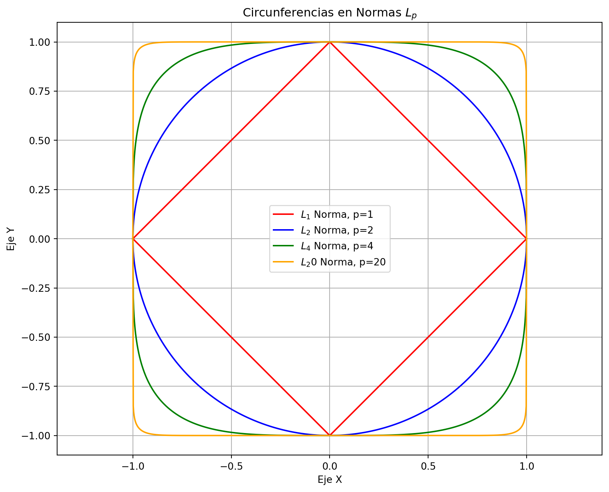

Norma de un vector \(l_p\) Sea \(x=[x_1,x_2,\dots,x_n]^T\) un vector en \(\mathbb{R}^n\), la norma \(l_p\) de \(x\) se define como: \[\|x\|_p=\left(\sum_{i=1}^n|x_i|^p\right)^{1/p}\] para \(1\leq p<\infty\) y \[\|x\|_\infty=\max_{1\leq i\leq n}|x_i|\]
6 Propiedades de las normas \(l_p\)
No negatividad
\[\|x\|_p\geq 0\text{ si }x\neq 0\]
y \(\|x\|_p=0\) si y solo si \(x=0\).
Para todo vector \(\mathbf{v}\) y escalar \(\alpha\), la norma \(L_p\) cumple con la propiedad de homogeneidad positiva: \[\| \alpha \mathbf{v} \|_p = |\alpha| \| \mathbf{v} \|_p\]
Desigualdad Triangular La norma \(L_p\) satisface la desigualdad triangular, que establece que para dos vectores \(\mathbf{v}\) y \(\mathbf{w}\), se cumple:
Si \(p=2\), la norma \(L_2\) se conoce como la norma Euclidiana o norma 2. La norma Euclidiana de un vector \(x\) se define como: \[\|x\|_2=\sqrt{\sum_{i=1}^n|x_i|^2}\] Ahora si \(x\) es un vector columna, la norma Euclidiana se puede escribir como: \[\|x\|_2=\sqrt{x^Tx}\]
import numpy as npimport matplotlib.pyplot as plt# Valores de p para los que se dibujarán las circunferenciasvalores_de_p = [1,2,4,20]colores = ['red', 'blue', 'green', 'orange']# Definición de los puntos en el círculo unitariotheta = np.linspace(0, 2* np.pi, 1000)x = np.linspace(-1, 1, 1000)# Configuración del gráficoplt.figure(figsize=(10, 8))plt.title("Circunferencias en Normas $L_p$")# Dibuja las circunferencias para diferentes valores de pfor j inrange(len(valores_de_p)): p=valores_de_p[j] y = (1-np.abs(x) ** p ) ** (1/ p) plt.plot(x, y, label=f"$L_{p}$ Norma, p={p}",color=colores[j]) plt.plot(x, -y, color=colores[j])# Añade etiquetas y leyendaplt.xlabel("Eje X")plt.ylabel("Eje Y")plt.legend()plt.grid(True)# Muestra el gráficoplt.axis("equal")plt.show()

7.0.1 Uso de la librería Numpy
La librería Numpy tiene una función para calcular la norma de un vector, la función se llama np.linalg.norm y recibe como parámetros el vector y el valor de \(p\). Aquí presentaremos algunos ejemplos de uso de esta función.
import numpy as npx=np.array([1,2,3])y=np.array([4,5,6])z=x-yprint(z)print(np.linalg.norm(z,1))print(np.linalg.norm(z,2))print(np.linalg.norm(z,np.inf))
[-3 -3 -3]
9.0
5.196152422706632
3.0
7.1 Normas matriciales
Las normas matriciales inducidas son una forma de medir la magnitud de una matriz en relación con un espacio vectorial. Son útiles en diversas áreas de las matemáticas y la ciencia, incluyendo el álgebra lineal y la teoría de matrices. En este documento, exploraremos las normas matriciales inducidas y cómo se calculan.
Norma Matricial Inducida por un Vector ** Propiedades
Si \(A\) y \(B\) son matrices
\[|\|AB\||_p\leq|\|A|\|_p\||B\||_p\]
La norma matricial inducida por una norma vectorial se define como: \[|\|A\||_{p} = \max_{x \neq 0} \frac{\|Ax\|_{p}}{\|x\|_{q}}\] donde \(\|\cdot\|_{p}\) y \(\|\cdot\|_{q}\) son normas vectoriales en \(\mathbb{R}^{n}\) y \(\mathbb{R}^{m}\), respectivamente. Esta definiciión se puede reescribir como:
\[|\|A\||_{p} = \max_{\|x\|_{q} = 1} \|Ax\|_{p}\]
Si \(A\) es una matriz cuadrada, entonces la norma matricial de la norma \(1\) se puede escribir como: \[|\|A\||_{1}=max_{1\leq k\leq n}\sum_{j=1}^{n}|A_{j,k}|\]
import numpy as np# Crear una matriz de ejemploA = np.array([[1, 2, 3], [4, 5, 6], [7, 8, 9]])# Calcular la norma de Frobenius (norma F)norm_frobenius = np.linalg.norm(A, ord='fro')print("Norma de Frobenius de A:", norm_frobenius)# Calcular la norma infinito (norma ∞)norm_inf = np.linalg.norm(A, ord=np.inf)print("Norma infinito de A:", norm_inf)# Calcular la norma 1 (norma 1)norm_1 = np.linalg.norm(A, ord=1)print("Norma 1 de A:", norm_1)
Norma de Frobenius de A: 16.881943016134134
Norma infinito de A: 24.0
Norma 1 de A: 18.0
8 Número de Condición
El número de condición de una matriz es una medida de la sensibilidad de la solución de un sistema de ecuaciones lineales \(Ax = b\) a pequeños cambios en la matriz \(A\). Esta definición es válida tanto para matrices cuadradas como rectangulares. El número de condición se denota \(cond(A)\), donde \(A\) es una matriz cuadrada o rectangular.
El número de condición de una matriz \(A\) se define como:
\[cond(A) = |\|A\|| \cdot |\|A^{-1}\||\]
Una matriz se dice bien condicionada si su número de condición es cercano a 1.
Sea la matriz \(A=\begin{bmatrix} 1+10^{-4} & 1 \\ 1 & 1 \end{bmatrix}\), ¿Cúal es numero de condición de \(A\)?
Supongamos que queremos resolver este sistema de ecuaciones
¿qué características podemos ver? ¿que tan sensibles es el sistema a pequeños cambios en la matriz \(A\)?
En un sistema de ecuaciones se refiere a cómo pequeñas variaciones en los coeficientes o términos del sistema afectan las soluciones o solución del sistema. En otras palabras, la sensibilidad se refiere a cuánto cambian las soluciones cuando los datos o las condiciones del problema cambian ligeramente.
import numpy as np# Crear una matriz de ejemploA = np.array([[1+1e-4, 1], [1, 1]])# Calcular el número de condición utilizando la norma 2condicion_numero = np.linalg.norm(A, ord=2) * np.linalg.norm(np.linalg.inv(A), ord=2)print("Número de Condición de A:", condicion_numero)